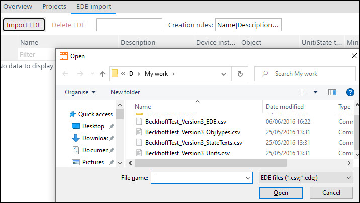
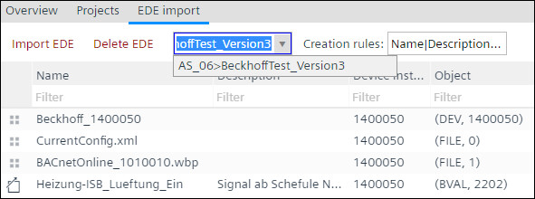

从 EDE 文件导入创建 BACnet 引用
您可以从其他 BACnet 设备的 EDE 文件创建 BACnet 参考对象。您还可以使用上下文菜单创建 BACnet 参考对象。这样，所需的 BACnet 引用函数就可以一步设置。该对象是在最喜欢的植物的顶层创建的Plants左侧的导航视图。
- Go to Engineering > BACnet references.
- Select the EDE import tab.
- Click Import EDE.
- This opens a generic explorer browser for the user to select the desired EDE file from the PC.

- Select the required EDE file and click Open.
- The CSV file information will appear in the EDE import window.
- You can delete the imported EDE file by clicking on Delete EDE.
- The EDE file is deleted.
- The file drop down menu shows the currently opened EDE file, with the naming string: Controller name where the file is saves” > “EDE file name”. The drop-down menu allows the user to select any of the previously used EDE files in the project, stored also in other controllers.

- The Creation rules drop down is a menu with multiple selection. It will allow the user to select which parameters can be reused from the EDE file when creating the BACnet reference object.
- Drag and drop an object from the EDE import window to create a BACnet reference object in the desired folder to the Plants navigation view on the left.
- You have created a BACnet reference object.
- Repeat step 8 to add more objects.